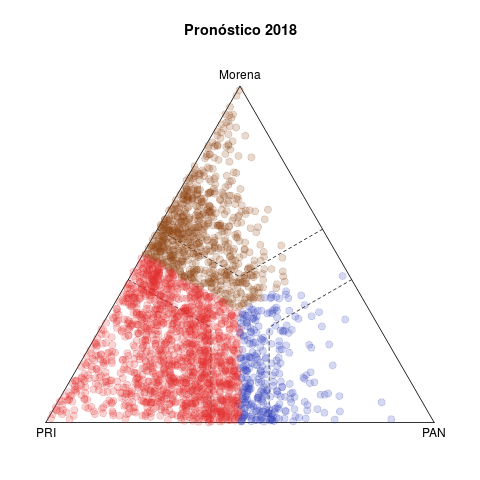
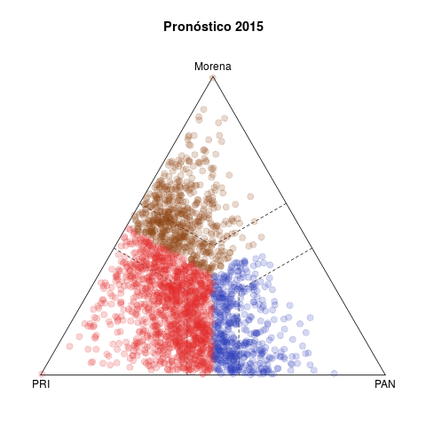

1 Statistics in action
Table 1 presents two pairs of diagrams for the 2015 (below) and 2018 (above) congressional elections. Each dot represents one municipality, colored according to the winning party, with coordinats in the ternary plot according to the relative votes of the PAN, the PRI, and the left in the federal deputy race (other smaller parties are excluded).1
|  |  |
|  |  |
The left side shows the vote forecasts. The idea behind this statistic is summarizing the evolution of relative votes in the municipality in five previous elections (2003–2015 in the case of 2018) and using the tendency to project a vote forecast for the current year. Plots in the right side show the actual results observed in both elections.
Three features are noteworthy in 2018. The first is the discrepancy between the left and right plots. Either the model does a poor job forecasting, or 2018 was an extraordinary election. History gave license to expect a comfortable PRI victory, both in the number of munipalities won and in margins of victory. Municipalities outside the dotted bands are won by margins of 15 points or more, and the bulk of secure municipalities are red in the forecast, with Morena in a distant second place. In fact, although a significant number of municipalities migrated towards the PAN, it was Morena who showed a clear advantage. PRI was the underachiever. In contrast, the lower left and right plots reveal fewer differences between them—2015 was a more normal election, the past offering muche better grounds to forecast.
Second, observed municipalities fled the edges and triangle vertices in 2018. Observations in vertices show a party that has no significant challenger. While those on the edges were bipartisan, whether more (inside dotted bands) or less (outside the bands) symmetric. It is also plain in forecasts that only the PAN–Morena edge was expected to be unpopulated. In practie, however, third party vote rarely collapsed to zero, there was mucho more discoordination than in the past. In fact, the intersection of dotted bands appeeared denser and more homogeneous in the right than the left diagram.
Third, the PAN vs left competition was legal tender in 2018. The pattern in competitive municipalities in the last two decades, still visible in the 2015 plots, involved either PRI–PAN or PRI–left rivalries, and rarely PAN–izquierda. It was this pattern that eased electoral alliances between PAN and PRD in subnational races since 2010 that culminated in the Frente they formed in 2018 to nominate a joint presidental candidate.
Plots in Table 2 report secciones electorales and therefore offer much finer-grained than the previous portraits. They introduce the other quantity of interst in this note: parties' core support. The idea behind this statistic is mesuring the size of the group that has historically supported the party consistently, in good but also in bad years.
 |
 |
 |
The horizontal axis in each plot measures the size of party core support groups as a proportion of the sección's electorate. The PRI enjoyed a clear edge over the rest of the parties in the period, with sizeable cores in all secciones nationwide. The distributions of the PAN and the left, in contrast, appear concentrated towards the zero—they have relatively few secciones with some inconditional support.
The vertical axis reports the three parties' performance in 2018 (the difference between the observed vote and the forecast). Positive values indicate that the party excelled expectations in the sección, negative ones that it under-performed it expectation. The PRI's electoral disaster appears all too clearly in the red plot. There were a few secciones with positive performance, but the density concentrates massively below the horizontal zero line, something that Table 1 had hinted. What is truly remarkable is that the dismal performance is directly proportional to the size of the PRI core. President Peña and candidate Meade achieved what seemed, if not impossible, extremely improbable: they alienated the PRI's unconditional voters in 2018. The PAN and the left met expectations in secciones where they have enjoyed with roups of support. Both (especially Morena) over-achieved where they lack important cores, taking away PRI voters.
The note elaborates how statistics were prepared (replication code can be found here).